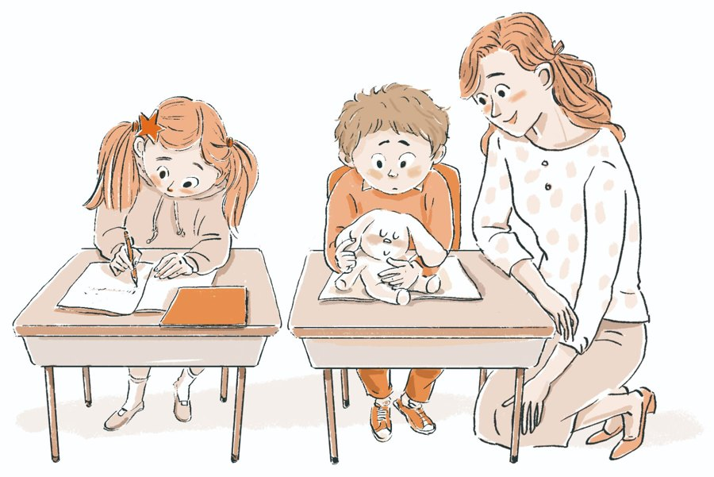

GLOBAL EDUCATION PARTNERSHIPS플러스존 교육을 함께 연구하고
플러스존 교육을 함께 연구하고
실천할 교육기관과 파트너를 찾습니다
1학교 시범교육
2교사 연수
3교육콘텐츠 공동개발
4글로벌 교육 협력
교육 현장에서 시작된 플러스존
현장의 경험을 교육의 신뢰로
플러스존 에듀케이션은 두 교육자의 오랜 교직 경험과 학생들과의 실제 만남 속에서 발전해 왔습니다. 학생이 스스로 성찰하고 판단하며 실천하도록 돕는 교육방법을 탐구해 왔습니다.
STUDENT STORIES
학생의 변화, 실제 사례로 확인하세요
학생이 자신의 생각과 행동을 돌아보고 더 나은 선택을 실천해 가는 현장 사례를 확인할 수 있도록 자료를 제공합니다.
학생 변화 사례 보기
 EDUCATION KOREA 2027
EDUCATION KOREA 2027INVITATION제24회 대한민국 교육박람회에
You’re invited to EDUCATION KOREA 2027
제24회 대한민국 교육박람회에
여러분을 초대합니다
You’re invited to EDUCATION KOREA 2027- DATE
- 2027. 1. 27 (수) – 29 (금)
- VENUE
- 서울 코엑스(COEX) A & B홀
문의 및 신청
발행 및 교육 운영 기관 · 플러스존 에듀솔루션 (PLUSZONE EDU SOLUTION)